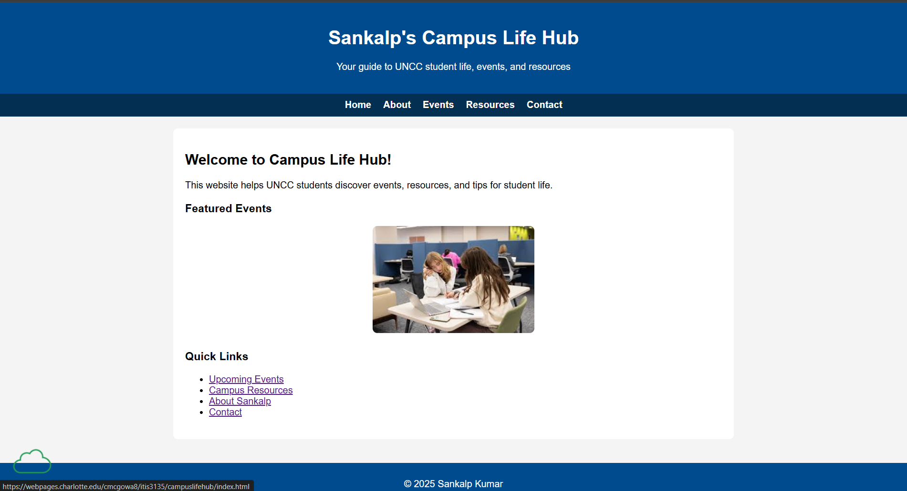

Review of: McGowan, Caroline

Visit the site
Pros
- Homepage clearly communicates the purpose: helping UNCC students discover events and resources.
- Featured events section uses images effectively to highlight important campus activities.
- Quick Links provide easy access to key pages like “Upcoming Events” and “Campus Resources.”
- Navigation menu is straightforward and consistent across pages.
- Text is readable, and spacing between sections keeps the page uncluttered.
- The “About” and “Contact” sections are easy to locate, giving the site credibility.
Constructive Suggestions
- Featured Events images could use captions or short descriptions for more context.
- Quick Links could stand out more visually, perhaps with hover effects or subtle background shading.
- Consider adding more color contrast between headings and the background to improve accessibility.
- Some images on the homepage are small; slightly larger or consistent sizing would improve the layout.
- Adding a footer with social links or navigation repetition could improve overall site navigation.
- The “About Sankalp” page title might be confusing for first-time visitors; consider a title more clearly aligned with the site’s purpose.